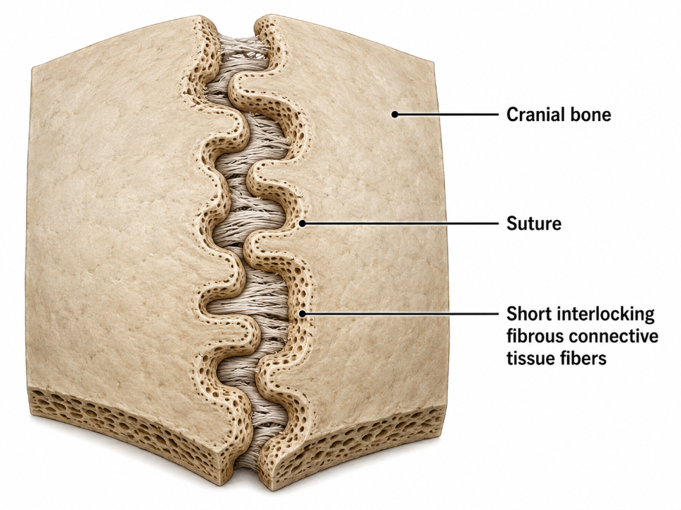
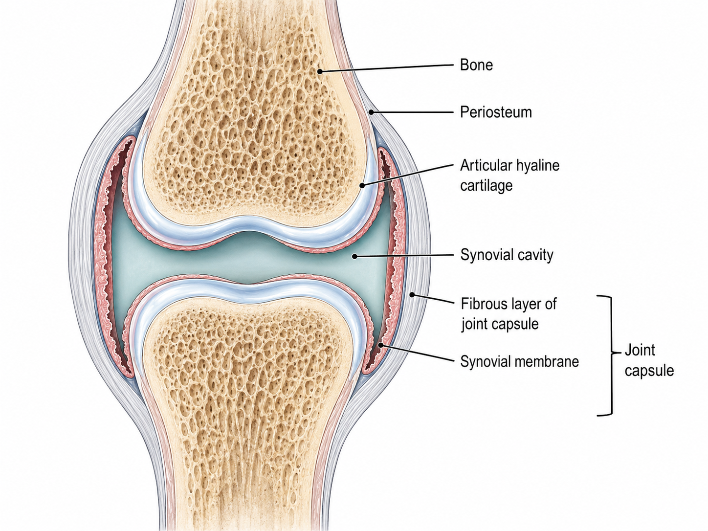

Taxonomy Matrix — Structure and Function
Tap a structural joint classification to inspect its histological properties and example:
Suture
Fibrous Structure · Synarthrotic (Immovable)
Syndesmosis
Fibrous Structure · Amphiarthrotic (Slightly Movable)
Gomphosis
Fibrous Structure · Synarthrotic (Immovable)
Synchondrosis
Cartilaginous Structure · Synarthrotic (Immovable)
Symphysis
Cartilaginous Structure · Amphiarthrotic (Slightly Movable)

Flat skull bones are bound together by short interlocking collagen fibers. Prevents movement completely to protect the brain.
Synovial Anatomy — Deep Dive
Click on any component of a synovial joint structure to view its anatomical description:

Motion Lab — Synovial Mechanical Classification
Click a mechanical class to inspect its range of motion, allowable directions, and structural example:
Ball-and-Socket
Multiaxial · Freely Movable
Condyloid
Biaxial · Angular movements (no rotation)
Plane / Gliding
Nonaxial · Sliding movement
Hinge
Uniaxial · Flexion and Extension only
Pivot
Uniaxial · Rotation only
Saddle
Biaxial · Allows opposition

Head of humerus fitting into the glenoid cavity of scapula (shoulder), or femur head in acetabulum (hip). Permits the greatest freedom of range of motion.